Industrial fencing & enclosures
Security screens and plant partitions. Prefer 304 outdoors; 201 for indoor budget compounds.
Opening Clear gap between wires (or pitch — say which). Dual-label inch + mm on every RFQ.
Wire Diameter in mm primary; SWG/BWG secondary (8g–21g on our matrix).
Form Rolls (4′×50′ reference) or panels / cut sheets.
Grades SS 304 (premium) · SS 201 (economy) — same sizes, different price & corrosion life.
SS welded mesh (also called weld mesh, weldmesh, stainless steel welded wire mesh, SS weld mesh, square mesh, or in trade speech weld mesh jali / SS jali / चौकोर जाली) is stainless steel wire resistance-welded at every intersection into a rigid square or rectangular grid. Supplied as rolls and/or panels/sheets. At GARG INDUSTRIAL MESH, Sector 9 Noida, we manufacture and supply it in SS 304 and SS 201 — matching our live catalogue grades — with a published 29-SKU aperture × wire matrix dual-labelled in inch and mm.
Buyers searching stainless welded mesh, SS weld mesh manufacturer India, or SS jali Noida: this is a welded grid, not diamond fencing and not punched plate. Quote by grade, opening, wire, form and quantity from our Delhi NCR works.
Buyers mix product families. Jump to the welded vs woven vs chain-link vs perforated table before you RFQ — wrong family wastes a site visit.
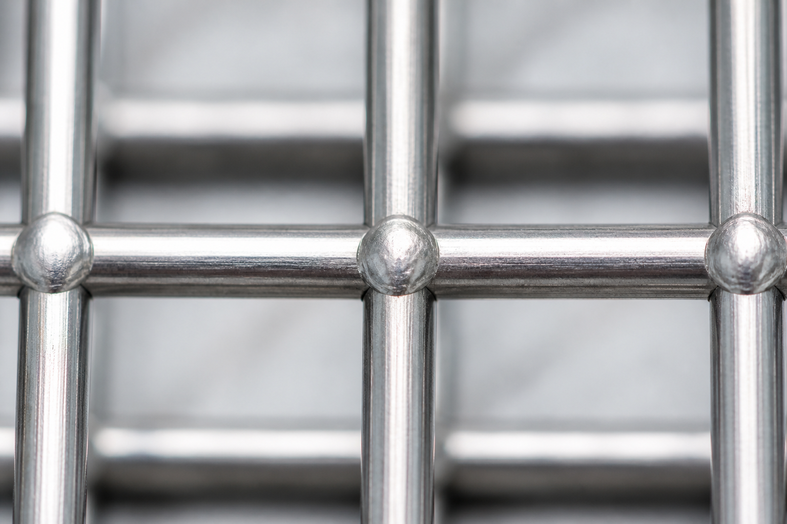
Click to enlargeSame word “jali” hides four different products. Use this table to land on the right GARG page — then specify grade, opening and wire.
| Product | How it is made | Looks / behaviour | Typical buy signal | GARG link |
|---|---|---|---|---|
| SS welded mesh (this page) | Wires resistance-welded at every cross | Rigid square / rectangular grid; holds shape when cut | “Weld mesh”, “weldmesh”, “square SS jali”, machine guard panel | Size chart on this hub |
| Woven / wire cloth | Wires interwoven (plain / twill) | Flexible; can fray at cut edges | Mosquito jali, fine filtration, sieve cloth | SS wire mesh (woven) |
| Chain link / diamond jali | Interlocked diamond fencing fabric | Flexible roll fencing; knuckles, not welds | Compound fence, heera jali, GI/MS 50 mm box | Chain link mesh |
| Perforated sheet | Solid plate with punched holes | Flat plate strength; hole pattern × thickness | Punching sheet, round/slot holes, MS/GI/SS/ALU | Perforated sheets |
Concrete reinforcing fabric (IS 1566) is a different structural product — not this stainless utility weldmesh unless your drawing says so.
Premium / workhorse
SS 304 (AISI 304 / UNS S30400 / EN 1.4301 — “18/8”) is the default corrosion grade for stainless welded mesh when the job sees weather, washdown, food-adjacent hygiene, chemical adjacency, or export BOQs that lock AISI 304. Also searched as 304 SS, T-304, SUS 304, 304 jali, 304 weld mesh.
Same opening × wire matrix as SS 201 — you pay for nickel-backed corrosion performance, not a different hole chart.
Economy stainless
SS 201 (AISI 201 / UNS S20100) is our economy stainless welded-mesh grade — manganese-rich, lower nickel than 304. Also searched as 201 SS, 201 grade mesh, 201 jali, 201 weld mesh, sasta SS mesh / budget SS mesh. Matches the live GARG welded-mesh listing (SS 201 & SS 304).
SS 201 is not a drop-in for marine, chloride, coastal, or long wet outdoor duty — recommend SS 304 for those RFQs. Magnet tests cannot prove grade. If your PO says “202”, see the FAQ — we stock 201 as economy grade and confirm before substituting.
India dealers often blur 201 / 202 / 304 on one card. GARG primary SKUs on this page: SS 304 and SS 201 only — SS 202 is treated as a trade alias / FAQ redirect to economy stainless, not a silent substitute.
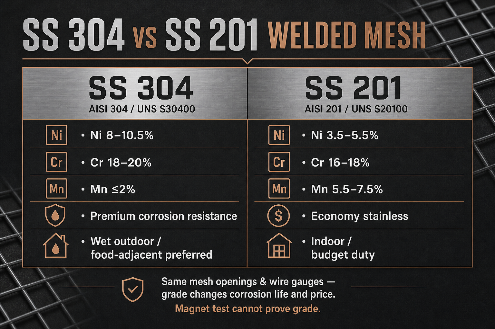
Click to enlarge| Factor | SS 304 | SS 201 |
|---|---|---|
| Series | 300 (Cr-Ni) | 200 (Cr-Mn-Ni) |
| Nickel (approx.) | 8.0–10.5% | 3.5–5.5% |
| Chromium | 18–20% | 16–18% |
| Manganese | ≤ 2.0% | 5.5–7.5% |
| Corrosion | Higher — wet outdoor / washdown default | Moderate — indoor / mild / budget |
| Cost | Higher ₹/kg | Lower economy stainless |
| Best for | Outdoor NCR, food-adjacent, long life, export 304 BOQ | Indoor partitions, budget fencing, dry guards |
| Magnetism | Essentially non-magnetic annealed; may pick up after cold work | Same behaviour — magnet ≠ grade proof |
Trade often says “201/202 jali” meaning cheap stainless. GARG economy welded mesh is SS 201. If the BOQ literally requires true AISI 202, write that on WhatsApp — we confirm supplyability. Never silently swap grades on critical MTC jobs.
Use this path before you lock a BOQ. Same opening × wire matrix for both grades — you are choosing corrosion life and budget, not a different hole chart.
| Use-case | Prefer | Why |
|---|---|---|
| Outdoor NCR fencing / railing infill | SS 304 | Weather + longer corrosion life |
| Indoor partition / dry storage basket | SS 201 | Economy stainless look + lower ₹/kg |
| Machine / fan guard — dry plant | SS 201 or 304 | Budget first; step to 304 if humidity/washdown |
| Washdown / food-adjacent guard | SS 304 | Hygiene-adjacent default; MTC on request |
| Export / BOQ locks AISI 304 | SS 304 | Do not substitute 201 |
| BOQ says “202 jali” / sasta SS | SS 201 (confirm) | Trade alias — verify if true 202 required |
Typical ASTM-style ranges for wire / sheet chemistry. Project MTCs govern the heat you receive.
| Element | SS 201 (S20100) | SS 304 (S30400) |
|---|---|---|
| C | ≤ 0.15 | ≤ 0.08 |
| Mn | 5.5–7.5 | ≤ 2.0 |
| Cr | 16–18 | 18–20 |
| Ni | 3.5–5.5 | 8.0–10.5 |
| N | ≤ 0.25 | ≤ 0.10 |
| Si | ≤ 1.0 | ≤ 1.0 |
| P / S | ≤ 0.06 / ≤ 0.03 | ≤ 0.045 / ≤ 0.03 |
| Fe | Balance | Balance |
| Property | SS 201 | SS 304 |
|---|---|---|
| Tensile strength | ≥ ~515–750 MPa (listing-dependent) | ~515–750 MPa |
| Yield (0.2%) | Often higher than 304 (typ. ≥ ~260–275 MPa) | ≥ ~205 MPa |
| Elongation | ≥ ~40% | ~40–60% |
| Density | ~7.8 g/cm³ | ~7.9 g/cm³ |
| Modulus | ~193 GPa class | ~193 GPa |
Standards language we stay factual with: stainless wire practice (ASTM A580 family), general welded wire fabric concepts (IS 4948 for steel fabric — not a fake ISI stamp on every roll). Ask for MTC when your tender requires it.
Live GARG range from our product sheets. Weights are geometry-based (same matrix for SS 304 and SS 201 — density difference is small; commercial price differs by grade). Standard roll reference: 4′ × 50′ (= 200 sq ft). Dual-label every RFQ in inch and mm. Confirm clear opening vs pitch.
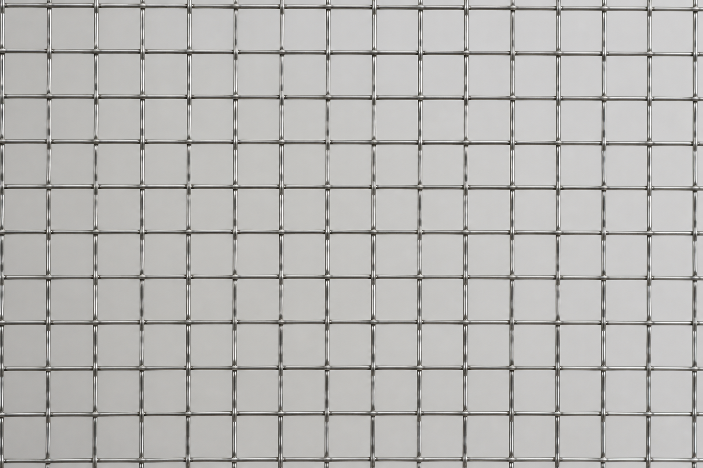
Enlarge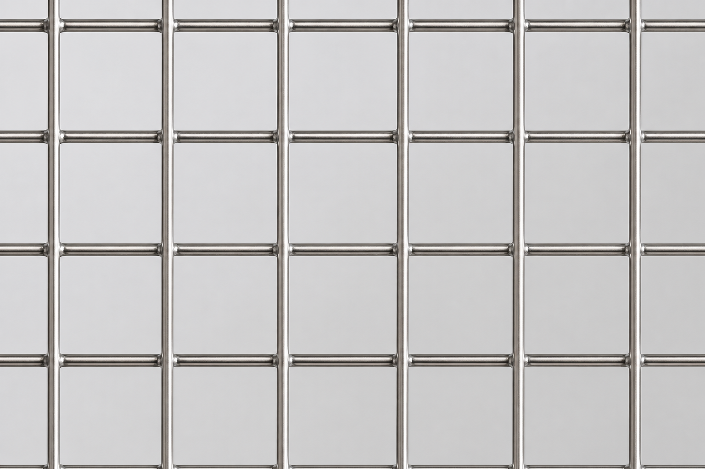
Enlarge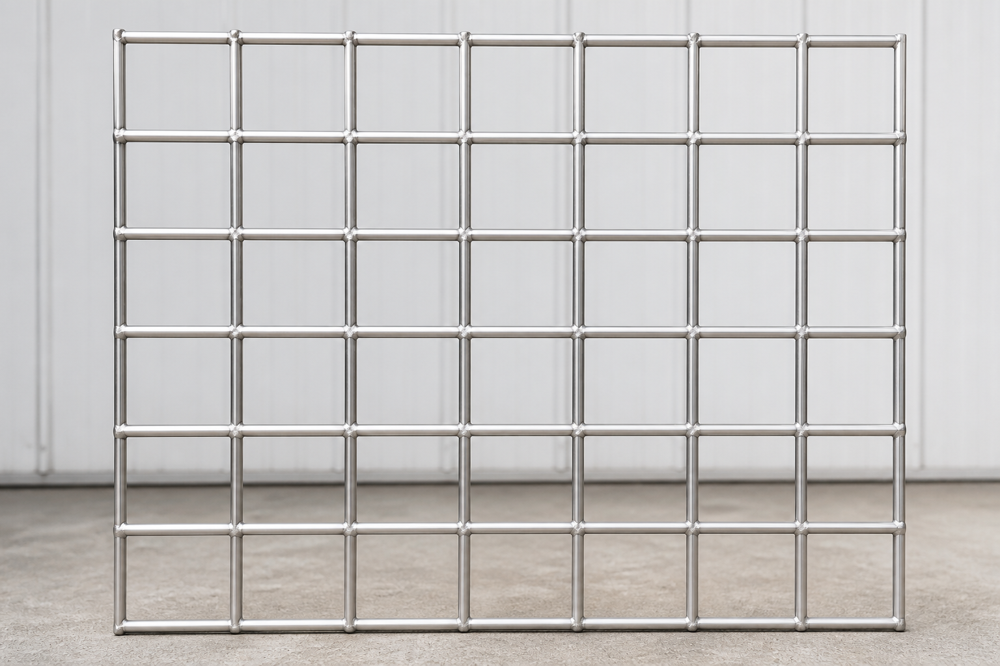
Enlarge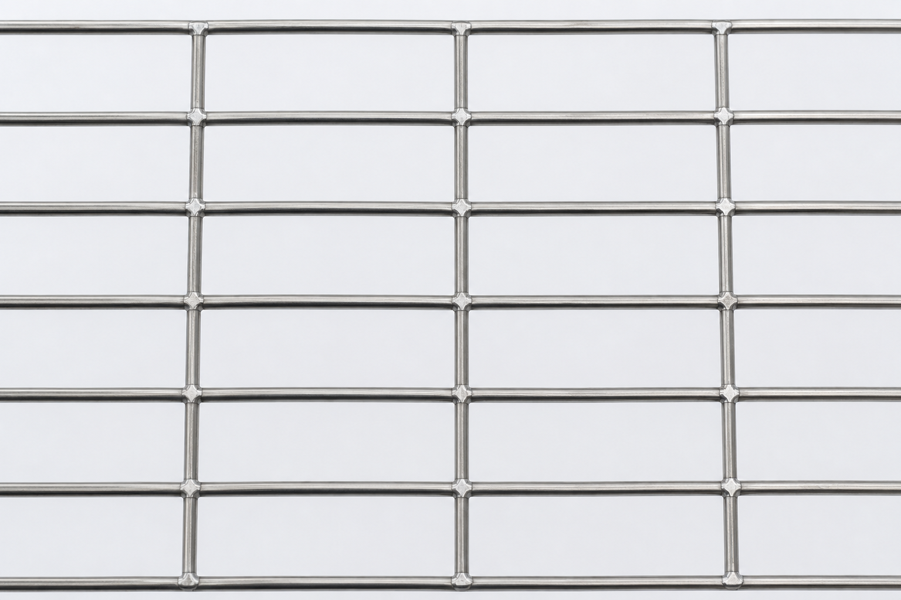
Enlarge| Size | Metric | Wire | Weight / sq ft | Weight 4′×50′ |
|---|---|---|---|---|
| 1″ × 1″ × 10g | 25 × 25 × 3.25 mm | 10g | 400 g | 80 kg |
| 1″ × 1″ × 12g | 25 × 25 × 2.64 mm | 12g | 280 g | 56 kg |
| 1″ × 1″ × 14g | 25 × 25 × 2.03 mm | 14g | 180 g | 36 kg |
| 1″ × 1″ × 16g | 25 × 25 × 1.63 mm | 16g | 120 g | 24 kg |
| 1″ × 1″ × 1 mm | 25 × 25 × 1.00 mm | 1 mm | 47.5 g | 9.5 kg |
| ½″ × 14g | 12.5 × 12.5 × 2.03 mm | 14g | 300 g | 60 kg |
| ½″ × 16g | 12.5 × 12.5 × 1.63 mm | 16g | 160 g | 32 kg |
| ½″ × 12g | 12.5 × 12.5 × 2.64 mm | 12g | 410 g | 82 kg |
| ¾″ × 14g | 19 × 19 × 2.03 mm | 14g | 240 g | 48 kg |
| ¾″ × 16g | 19 × 19 × 1.63 mm | 16g | 145 g | 29 kg |
| 12.5 mm × 14g | 12.5 × 12.5 × 2.03 mm | 14g | 365 g | 73 kg |
| 12.5 mm × 16g | 12.5 × 12.5 × 1.63 mm | 16g | 205 g | 41 kg |
| 30 mm × 12g | 30 × 30 × 2.64 mm | 12g | 240 g | 48 kg |
| 2″ × 2″ × 8g | 50 × 50 × 4.06 mm | 8g | 375 g | 75 kg |
| 2″ × 2″ × 10g | 50 × 50 × 3.25 mm | 10g | 210 g | 42 kg |
| 2″ × 2″ × 12g | 50 × 50 × 2.64 mm | 12g | 145 g | 29 kg |
| 2″ × 2″ × 14g | 50 × 50 × 2.03 mm | 14g | 100 g | 20 kg |
| 3″ × 3″ × 10g | 75 × 75 × 3.25 mm | 10g | 140 g | 28 kg |
| 10 mm × 18g | 10 × 10 × 1.22 mm | 18g | 165 g | 33 kg |
| 10 mm × 16g | 10 × 10 × 1.63 mm | 16g | 265 g | 53 kg |
| 10 mm × 14g | 10 × 10 × 2.03 mm | 14g | 465 g | 93 kg |
| 28 mm × 10g | 28 × 28 × 3.25 mm | 10g | 375 g | 75 kg |
| ¼″ × 21g | 6.35 × 6.35 × 0.81 mm | 21g | 120 g | 24 kg |
| ¼″ × 19g | 6.35 × 6.35 × 1.02 mm | 19g | 190 g | 38 kg |
| ¼″ × 18g | 6.35 × 6.35 × 1.22 mm | 18g | 265 g | 53 kg |
| Size | Metric | Wire | Weight / sq ft | Weight 4′×50′ |
|---|---|---|---|---|
| 1″ × ½″ × 14g | 25 × 12.5 × 2.03 mm | 14g | 270 g | 54 kg |
| 2″ × 1″ × 10g | 50 × 25 × 3.25 mm | 10g | 310 g | 62 kg |
| 2″ × 1″ × 12g | 50 × 25 × 2.64 mm | 12g | 220 g | 44 kg |
| 3″ × 1″ × 10g | 75 × 25 × 3.25 mm | 10g | 260 g | 52 kg |
SKU count: 25 square + 4 rectangular = 29. Custom openings / wires within plant capability — ask on RFQ.
Our published roll weights assume a 4 ft × 50 ft reference roll. Area = 200 sq ft. Therefore:
Approx. roll kg ≈ (g per sq ft ÷ 1000) × 200 = g/sqft × 0.2
| SKU example | g / sq ft | Math | ≈ Roll kg |
|---|---|---|---|
| 1″ × 1″ × 14g | 180 g | 180 ÷ 1000 × 200 | 36 kg |
| 2″ × 2″ × 12g | 145 g | 145 ÷ 1000 × 200 | 29 kg |
| ½″ × 12g | 410 g | 410 ÷ 1000 × 200 | 82 kg |
| ¼″ × 21g | 120 g | 120 ÷ 1000 × 200 | 24 kg |
India RFQs mix SWG and millimetres. Publish both — our sheet locks these pairs for SS welded mesh quotes:
| SWG | mm (GARG sheet) | Exact SWG ≈ |
|---|---|---|
| 8g | 4.06 mm | 4.064 |
| 10g | 3.25 mm | 3.251 |
| 12g | 2.64 mm | 2.642 |
| 14g | 2.03 mm | 2.032 |
| 16g | 1.63 mm | 1.626 |
| 18g | 1.22 mm | 1.219 |
| 19g | 1.02 mm | 1.016 |
| 21g | 0.81 mm | 0.813 |
Two buyers can write “25 mm mesh” or “1 inch mesh” and mean different things. Lock clear opening vs pitch on every RFQ — dual-label inch + mm.
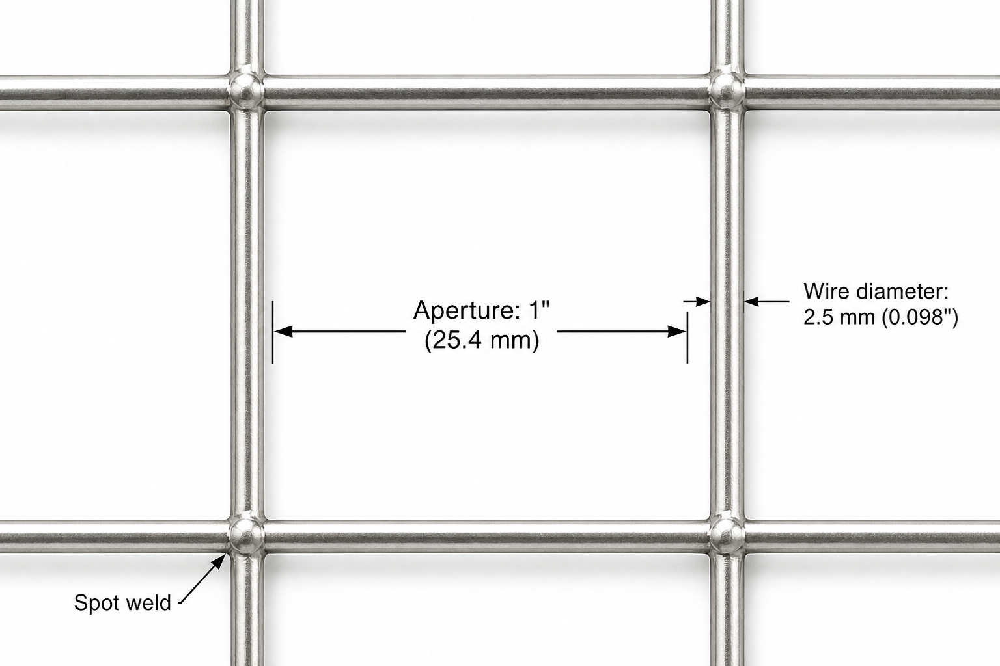
Click to enlarge| Term | What you measure | RFQ tip |
|---|---|---|
| Clear opening (aperture) | Gap between inner faces of adjacent wires | Best for “will a finger / tool pass?” |
| Pitch | Wire axis to wire axis | Common on engineering drawings |
| Open area % | Share of face that is open | Square approx: (A/(A+D))² × 100 |
You need a 25 mm clear square opening with 2.03 mm (14 SWG) wire.
Pitch ≈ 25 + 2.03 = ~27 mm centre-to-centre.
Open area ≈ (25 / (25 + 2.03))² × 100 ≈ ~85%.
RFQ line: SS 304 · 25 × 25 mm CLEAR · wire 2.03 mm (14g) · panel
Drawing says 25 mm pitch with 2 mm wire.
Clear opening ≈ 25 − 2 = ~23 mm (not “25 mm clear”).
If you order “25 mm mesh” without saying pitch vs clear, the fabricator may ship the wrong aperture.
RFQ line: SS 201 · 25 mm PITCH · wire 2.0 mm · roll 4′×50′
“1 inch mesh” and “25 mm mesh” usually mean the same commercial opening (~25 × 25 mm) — but still write clear or pitch so the quote matches your drawing.
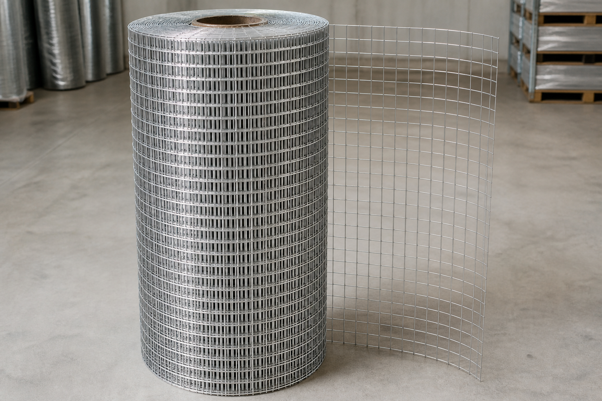
Enlarge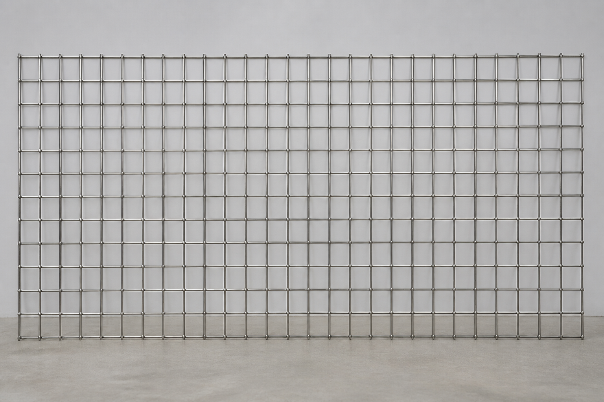
EnlargeStandard weight tables use 4 ft × 50 ft. Other widths/lengths on request. Typical for fencing runs and bulk fabric.
Common site forms include 3′×8′ and 4′×8′ style panels plus cut pieces. Heavier wire usually ships as panel.
Edges: cut flush or with wire overhang — specify. Finish: mill / bright; passivation or polish only when RFQ asks.
Job-first specs convert better than a vague “stainless solutions” line. Prefer SS 304 outdoors / washdown; SS 201 for indoor budget. Need diamond fencing instead? See chain link mesh (GI / MS). Need punched plate? See perforated sheets.
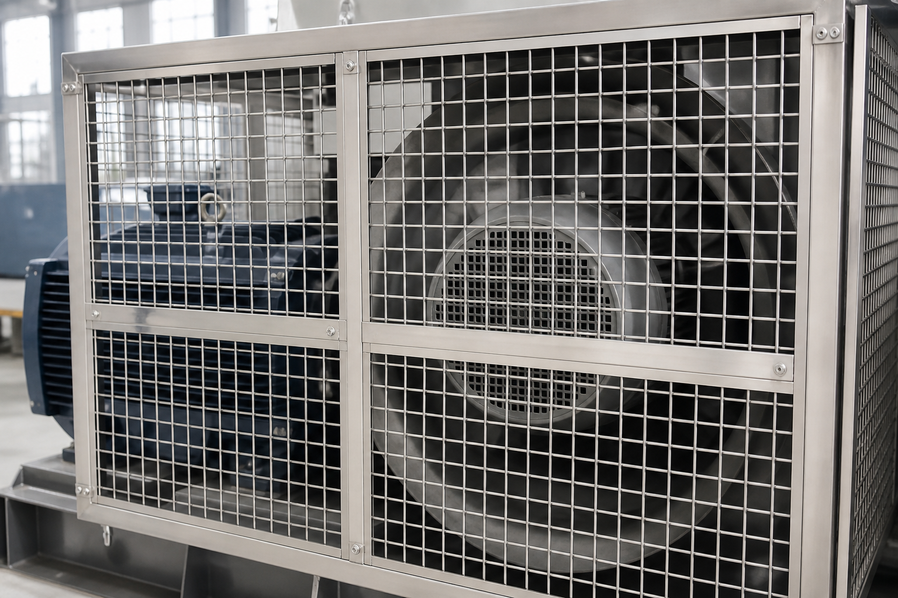
Enlarge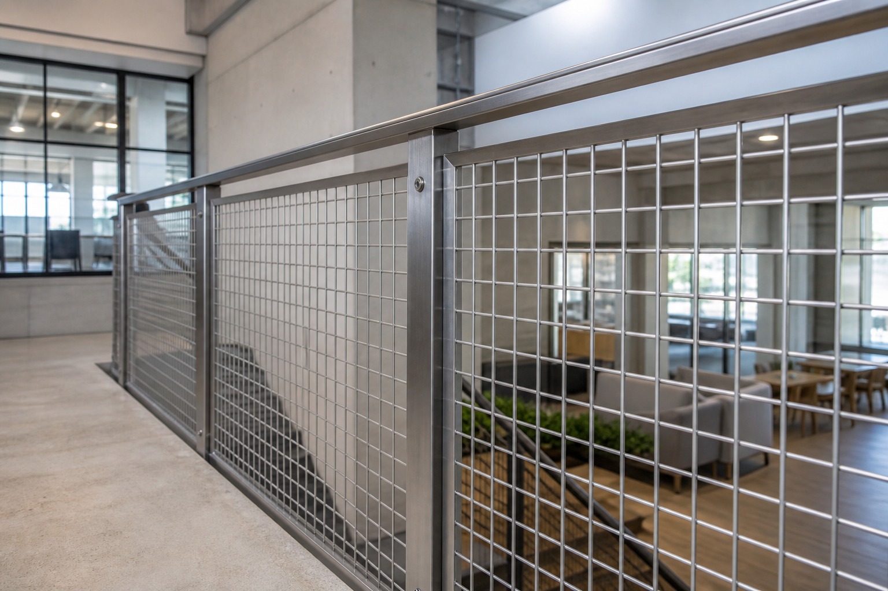
Enlarge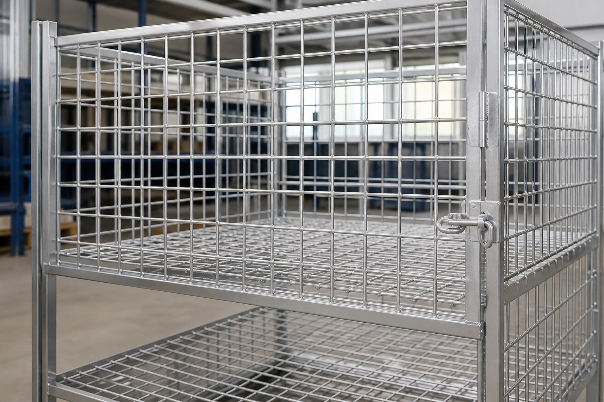
Enlarge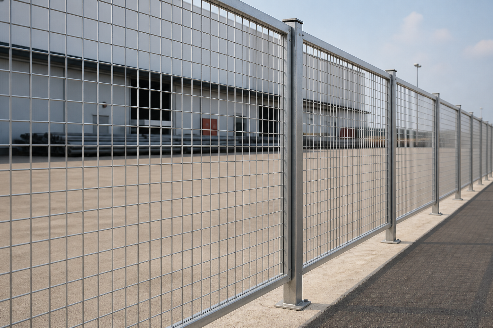
EnlargeSecurity screens and plant partitions. Prefer 304 outdoors; 201 for indoor budget compounds.
Rigid welded openings for machinery. 304 if washdown; 201 dry indoor.
Storage trays and baskets — either grade by budget and humidity.
304 where hygiene matters; 201 for cost-sensitive farm runs.
Infill panels — 304 exterior; 201 interior decorative trim.
Air vents and light reinforcement (not structural rebar mesh unless specified). Economy stacks often 201.
Copy the line, replace blanks, send on WhatsApp or call. Price is by specification — not a frozen sticker.
Paste into WhatsApp to 9910238277, then fill the blanks:
Open WhatsApp with template Call 9910238277
Supply of SS 304 welded wire mesh, opening 25 × 25 mm (clear), wire 2.03 mm (14 SWG), in 4 ft × 50 ft rolls / cut panels as directed — GARG INDUSTRIAL MESH, Noida. Alternate economy grade SS 201 where approved.
SS 304 weld mesh 25mm x 25mm clear, 2mm wire, panel — rate batao · city Noida · MTC chahiye?
These errors show up on India RFQs and marketplace cards. Avoid them and your quote matches the site job.
Factory supply from Sector 9 Noida — practical packing and document language, not fake ISO stamps.
Write MTC: Y when required. Magnet tests are not accepted as grade proof. GST invoice available on supply.
Live site indicative language can read From ₹85/sqft for lighter economy stacks — treat as a starting signal only. Actual quote moves with steel markets and the full stack:
Marketplace ₹/kg cards vary because photo, grade and wire often do not match. Compare quotes on the same stack, then call 9910238277. GST invoice available on supply.
We supply SS 304 and SS 201 welded mesh (weld mesh jali) from G 25, Noida Sector 9, 201301 — one honest NCR constellation on this page, not thin city doorway clones. Call or WhatsApp 9910238277. Full site: gargindustrialmesh.com.
Cut-to-size — panels and pieces to drawing (state finished size + edge).
Same-day / next-day NCR dispatch — when stock and cut size allow; confirm lead time on call.
Walk-in Sector 9 — align samples / BOQ at the plant by appointment before larger India dispatch.
Plant and dispatch home. Walk-in for sample vs BOQ alignment, cut-to-size panels, and local pickup. Best first stop before a larger India freight order.
Industrial and warehouse mesh RFQs — name Greater Noida on the RFQ so freight and lead time match the site city.
Contractor and fabricator roll/panel supply to drawing across Delhi. Spec stacks with grade + opening + wire convert cleanly to factory quotes.
Society and commercial compound / railing infill — both spellings. Prefer SS 304 outdoors; SS 201 for indoor budget trim.
Industrial-belt fabric orders — share destination pin with RFQ for roll or panel dispatch timing.
Project roll and panel supply — height/opening/wire/grade still drive the quote; name the site zone for freight.
Also searched as: SS welded mesh Noida, SS weld mesh Delhi NCR, stainless welded mesh Gurugram, SS jali supplier Ghaziabad / Faridabad / Greater Noida, cut to size SS weld mesh Sector 9.
Answers match the FAQ schema 1:1. Need a quote — 9910238277.
SS welded mesh (weld mesh / weldmesh / stainless welded wire mesh) is stainless steel wire resistance-welded at every intersection into a rigid square or rectangular grid. In India it is also called SS jali or weld mesh jali. It is not woven mosquito mesh, not diamond chain-link, and not perforated sheet.
SS 304 (AISI 304 / UNS S30400) has higher nickel (about 8–10.5%) and better corrosion resistance for wet outdoor, washdown and food-adjacent work. SS 201 (AISI 201 / UNS S20100) is the economy stainless grade with more manganese and less nickel (about 3.5–5.5%) — suited to indoor partitions, budget fencing and dry duty. Same openings and wire gauges; price and corrosion life differ by grade.
No — AISI 201 and AISI 202 are different chemistry ranges, but Indian trade often confuses or mixes them as “200-series / economy stainless.” GARG stocks SS 201 as the economy welded-mesh grade alongside SS 304. If your BOQ literally requires true SS 202, tell us on the RFQ so we can confirm supplyability — do not assume silent substitution.
Welded mesh is rigid at every cross — better for machine guards, panels, fencing grids and cut pieces that must hold shape. Woven wire cloth / mosquito jali is interwoven and can fray when cut — better for fine filtration and insect screens. Say weld mesh or welded wire mesh when you mean this product.
Chain link is interlocked diamond fencing fabric in rolls. Welded mesh is a welded square/rectangular grid supplied as rolls or panels. Different product — see our GI / MS chain link mesh page for diamond jali.
No. Welded mesh is a wire grid fused at crossings. Perforated sheet is solid plate with punched holes. Different strength, open area and install. Need punched plate? See perforated sheets.
SS welded mesh (304 or 201) is stainless — better corrosion and cleanability for wet, hygiene-adjacent or long outdoor life. GI welded mesh is galvanized mild steel — usually lower ₹/kg for dry or coated outdoor fencing. If your drawing says stainless or SS jali, do not substitute GI without approval.
We publish 29 SKUs covering openings from 1/4 inch (6.35 mm) to 3 inch (75 mm), including rectangular meshes, with wire from about 0.81 mm (21g) to 4.06 mm (8g). Standard roll reference is 4 ft × 50 ft. Panels and cut-to-size on RFQ. Same size matrix for SS 304 and SS 201.
In India trade, “1 inch mesh” and “25 mm mesh” usually mean the same commercial opening (~25 × 25 mm). Always confirm clear opening vs pitch and write both inch and mm on the RFQ so the quote matches your drawing.
Confirm whether your drawing means clear opening (space between wires) or pitch (centre-to-centre). Pitch ≈ clear opening + wire diameter. Example: clear 25 mm with 2 mm wire ≈ 27 mm pitch. Open area for square mesh is roughly (A / (A + D))² × 100. Always state opening type and wire separately on the RFQ.
Our standard roll reference is 4 ft × 50 ft = 200 sq ft. So approximate roll kg ≈ (g per sq ft ÷ 1000) × 200. Example: 180 g/sqft → 0.18 × 200 = 36 kg per roll. Actual billed weight may vary slightly with wire tolerance and edge trim.
For long outdoor life in Delhi NCR weather we usually recommend SS 304. SS 201 can work for budget or sheltered/dry outdoor runs with shorter expected life — not a drop-in for coastal or chloride-heavy duty.
Machine guards in dry indoor plants can use SS 201 or SS 304 by budget. Washdown, food-adjacent, dairy or hygiene-sensitive areas should specify SS 304 (or higher if your drawing says so). We do not overclaim food certification for SS 201 or for 304 without your MTC / audit requirements.
No. Both grades can pick up a magnet after cold working (drawing, welding, forming). A magnet test is not grade proof. Ask for MTC / chemistry confirmation when the project requires it.
Price moves with grade (304 vs 201), wire diameter, opening (tighter mesh uses more steel), roll vs panel, quantity and freight. Indicative site starting levels can be around From ₹85/sqft for lighter economy stacks — always confirm with a full RFQ. We do not publish fake fixed catalogue stickers.
Yes. We supply rolls (standard reference 4 ft × 50 ft), panels/sheets such as 3×8 ft / 4×8 ft style sizes, cut-to-size pieces, and wholesale quantities for fabricators and contractors. State form, finished size, edge preference, grade, opening and wire. Walk-in / sample alignment at Sector 9 Noida by appointment.
Yes. We supply from G 25, Sector 9, Noida 201301 across Delhi NCR — Delhi, Greater Noida, Gurugram / Gurgaon, Ghaziabad and Faridabad — plus India-wide freight when required. Same-day / next-day NCR dispatch depends on stock and cut size — call +91 9910238277 for lead time.
Ask for mill test / grade confirmation on the RFQ when the project needs it. Magnet tests cannot reliably prove 201 vs 304. Rolls are typically strapped/wrapped for transit; panels stacked and protected on edges. We quote exact grade — no silent substitution.
Send: grade (SS 304 or SS 201), opening inch+mm and clear vs pitch, wire mm or SWG, square or rectangular, roll or panel + size, quantity, city, MTC Y/N, end use. Example: SS 304 weld mesh 25×25 mm clear, 2.03 mm (14g), 4′×50′ roll × 5, Noida. Copy the full template.
304 jali mein zyada nickel hota hai — outdoor, wet aur hygiene-sensitive kaam ke liye better. 201 jali economy stainless hai — indoor partition, budget fencing, dry duty. Opening aur wire same ho sakte hain; rate aur corrosion life grade se badalte hain. RFQ pe grade clearly likho: SS 304 ya SS 201. Agar BOQ mein 202 likha hai to WhatsApp pe bata dena.
We supply SS 304 and SS 201 welded mesh from Noida Sector 9 — grade, opening, wire, roll/panel and qty to your RFQ.
Send grade (304/201), opening, wire, form, quantity and destination. Factory quote with lead time, packing and GST invoice — no invented catalogue stickers.
Need SS 304 / SS 201 weld mesh — send grade, opening and wire.